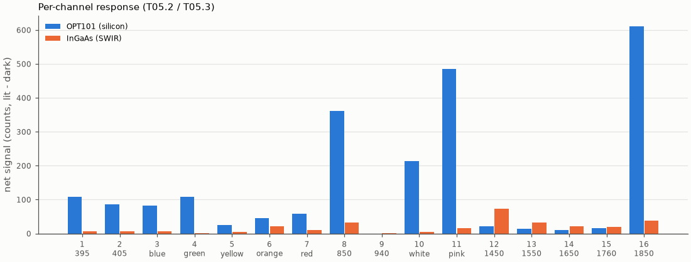
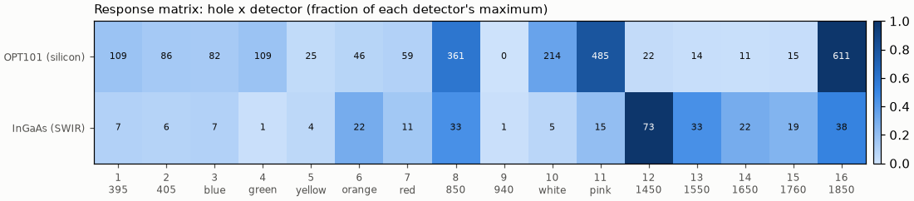
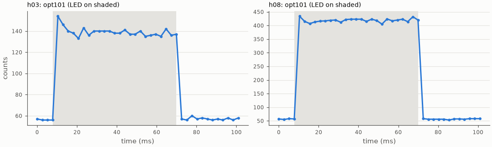

| Sample | black_cup | Operator | bench |
|---|---|---|---|
| Firmware | 2.5.1 (proto 1, build 2026-11-16) | Config | 1dfc610f845d (thresholds provisional) |
| Host | macOS-27.0.1-x86_64-i386-64bit, Python 3.12.4 | Software | lio 0.2.0, git 25a28f768d (dirty) |
| Results | PASS 15, FAIL 4 | ||
| LED duty | 0.0 s of cool-down waits; 0 over-budget on-time(s) | ||
| Notes | refresh after calibration fixes | ||
| Test | Name | Status | Note |
|---|---|---|---|
| T05.1 | Rail gating by CE1 / CE2 | ✓ PASS | |
| T05.2 | Per-channel response | ✕ FAIL | |
| T05.3 | Channel address and isolation | ✕ FAIL | |
| T05.4 | Off-state return after each MEAS | ✓ PASS | |
| T05.5 | Repeatability (interleaved MEAS) | ✓ PASS | not judged (net < 1000 counts or detector unusable): 1/opt101, 2/opt101, 3/opt101, 4/opt101, 5/opt101, 6/opt101, 7/opt101, 8/opt101, 8/ingaas, 9/opt101, 9/ingaas, 10/opt101, 11/opt101, 12/ingaas, 13/ingaas, 14/ingaas, 15/ingaas |
| T06.1 | OPT101 | ✓ PASS | |
| T06.2 | InGaAs TIA | ✓ PASS | |
| T06.3 | Cross-calibration on the shared holes | ✕ FAIL | |
| T07.1 | Step response and settling time | ✕ FAIL | |
| T07.2 | Recommended settle time | ✓ PASS | |
| T07.3 | MEAS timing | ✓ PASS | |
| T09.2 | Each motor moves both ways | ✓ PASS | |
| T09.3 | MOTOR STOP latency | ✓ PASS | |
| T09.4 | Detector noise while a motor moves | ✓ PASS | |
| T10.1 | Power-up dark state | ✓ PASS | |
| T10.2 | On-time watchdog | ✓ PASS | |
| T10.3 | Comms-loss failsafe | ✓ PASS | |
| T10.4 | Single-channel invariant | ✓ PASS | |
| T10.5 | Motion disarmed after comms loss | ✓ PASS |



| Check | Status | Result | Criterion |
|---|---|---|---|
Hole 8 selected, CE1 lowT05.1/A/h08/ce_low |
✓ PASS | opt101 56 (dark 56) | dark |
Hole 8 selected, CE1 highT05.1/A/h08/ce_high |
✓ PASS | opt101 398 | light above the detection threshold |
Hole 8 with CE2 (wrong rail)T05.1/A/h08/wrong_ce |
✓ PASS | ERR code=3 needs exactly one selected hole on this rail | refused (code 3) |
Hole 12 selected, CE2 lowT05.1/B/h12/ce_low |
✓ PASS | ingaas -168 (dark -168) | dark |
Hole 12 selected, CE2 highT05.1/B/h12/ce_high |
✓ PASS | ingaas -96 | light above the detection threshold |
Hole 12 with CE1 (wrong rail)T05.1/B/h12/wrong_ce |
✓ PASS | ERR code=3 needs exactly one selected hole on this rail | refused (code 3) |
| Check | Status | Result | Criterion |
|---|---|---|---|
Hole 9 (940) on ingaasT05.2/h09/ingaas |
✕ FAIL | net +1 (none); expected signal, none seen | expect signal: signal >= 50 |
Hole 9 (940) on opt101T05.2/h09/opt101 |
✕ FAIL | net +0 (none); expected signal, none seen | expect signal: signal >= 15 |
Hole 8 (850) on ingaasT05.2/h08/ingaas |
! WARN | net +33 (weak); weaker than expected | expect signal: signal >= 50 |
Hole 13 (1550) on ingaasT05.2/h13/ingaas |
! WARN | net +33 (weak); weaker than expected | expect signal: signal >= 50 |
Hole 14 (1650) on ingaasT05.2/h14/ingaas |
! WARN | net +22 (weak); weaker than expected | expect signal: signal >= 50 |
Hole 1 (395) on opt101T05.2/h01/opt101 |
✓ PASS | net +109 (signal); signal as expected | expect signal: signal >= 15 |
Hole 2 (405) on opt101T05.2/h02/opt101 |
✓ PASS | net +86 (signal); signal as expected | expect signal: signal >= 15 |
Hole 3 (blue) on opt101T05.2/h03/opt101 |
✓ PASS | net +82 (signal); signal as expected | expect signal: signal >= 15 |
Hole 4 (green) on opt101T05.2/h04/opt101 |
✓ PASS | net +109 (signal); signal as expected | expect signal: signal >= 15 |
Hole 5 (yellow) on opt101T05.2/h05/opt101 |
✓ PASS | net +25 (signal); signal as expected | expect signal: signal >= 15 |
Hole 6 (orange) on opt101T05.2/h06/opt101 |
✓ PASS | net +46 (signal); signal as expected | expect signal: signal >= 15 |
Hole 7 (red) on opt101T05.2/h07/opt101 |
✓ PASS | net +59 (signal); signal as expected | expect signal: signal >= 15 |
Hole 8 (850) on opt101T05.2/h08/opt101 |
✓ PASS | net +361 (signal); signal as expected | expect signal: signal >= 15 |
Hole 10 (white) on opt101T05.2/h10/opt101 |
✓ PASS | net +214 (signal); signal as expected | expect signal: signal >= 15 |
Hole 11 (pink) on opt101T05.2/h11/opt101 |
✓ PASS | net +485 (signal); signal as expected | expect signal: signal >= 15 |
Hole 12 (1450) on ingaasT05.2/h12/ingaas |
✓ PASS | net +73 (signal); signal as expected | expect signal: signal >= 50 |
Hole 15 (1760) on ingaasT05.2/h15/ingaas |
✓ PASS | net +19 (weak); weak (weak expected) | expect weak: signal >= 50 |
Hole 1 (395) on ingaasT05.2/h01/ingaas |
- SKIP | not judged: 395 is outside the ingaas range (judged by opt101); recorded net +7 | out-of-range readings are not judged (channel.judge_out_of_range: false) |
Hole 2 (405) on ingaasT05.2/h02/ingaas |
- SKIP | not judged: 405 is outside the ingaas range (judged by opt101); recorded net +6 | out-of-range readings are not judged (channel.judge_out_of_range: false) |
Hole 3 (blue) on ingaasT05.2/h03/ingaas |
- SKIP | not judged: blue is outside the ingaas range (judged by opt101); recorded net +7 | out-of-range readings are not judged (channel.judge_out_of_range: false) |
Hole 4 (green) on ingaasT05.2/h04/ingaas |
- SKIP | not judged: green is outside the ingaas range (judged by opt101); recorded net +1 | out-of-range readings are not judged (channel.judge_out_of_range: false) |
Hole 5 (yellow) on ingaasT05.2/h05/ingaas |
- SKIP | not judged: yellow is outside the ingaas range (judged by opt101); recorded net +4 | out-of-range readings are not judged (channel.judge_out_of_range: false) |
Hole 6 (orange) on ingaasT05.2/h06/ingaas |
- SKIP | not judged: orange is outside the ingaas range (judged by opt101); recorded net +22 | out-of-range readings are not judged (channel.judge_out_of_range: false) |
Hole 7 (red) on ingaasT05.2/h07/ingaas |
- SKIP | not judged: red is outside the ingaas range (judged by opt101); recorded net +11 | out-of-range readings are not judged (channel.judge_out_of_range: false) |
Hole 10 (white) on ingaasT05.2/h10/ingaas |
- SKIP | not judged: white is outside the ingaas range (judged by opt101); recorded net +5 | out-of-range readings are not judged (channel.judge_out_of_range: false) |
Hole 11 (pink) on ingaasT05.2/h11/ingaas |
- SKIP | not judged: pink is outside the ingaas range (judged by opt101); recorded net +15 | out-of-range readings are not judged (channel.judge_out_of_range: false) |
Hole 12 (1450) on opt101T05.2/h12/opt101 |
- SKIP | not judged: 1450 is outside the opt101 range (judged by ingaas); recorded net +22 | out-of-range readings are not judged (channel.judge_out_of_range: false) |
Hole 13 (1550) on opt101T05.2/h13/opt101 |
- SKIP | not judged: 1550 is outside the opt101 range (judged by ingaas); recorded net +14 | out-of-range readings are not judged (channel.judge_out_of_range: false) |
Hole 14 (1650) on opt101T05.2/h14/opt101 |
- SKIP | not judged: 1650 is outside the opt101 range (judged by ingaas); recorded net +11 | out-of-range readings are not judged (channel.judge_out_of_range: false) |
Hole 15 (1760) on opt101T05.2/h15/opt101 |
- SKIP | not judged: 1760 is outside the opt101 range (judged by ingaas); recorded net +15 | out-of-range readings are not judged (channel.judge_out_of_range: false) |
Hole 16 (1850) on ingaasT05.2/h16/ingaas |
- SKIP | not judged: 1850 is outside the ingaas range (judged by no detector); recorded net +38 | out-of-range readings are not judged (channel.judge_out_of_range: false) |
Hole 16 (1850) on opt101T05.2/h16/opt101 |
- SKIP | not judged: 1850 is outside the opt101 range (judged by no detector); recorded net +611 | out-of-range readings are not judged (channel.judge_out_of_range: false) |
| Check | Status | Result | Criterion |
|---|---|---|---|
Hole 9 (940) detector patternT05.3/h09/pattern |
✕ FAIL | no response on ['ingaas', 'opt101']: possible swapped, misrouted or stuck-on channel | expected ['ingaas', 'opt101'] |
Hole 1 (395) detector patternT05.3/h01/pattern |
✓ PASS | seen by ['opt101'] as expected (ingaas not judged: outside its range) | expected ['opt101'] |
Hole 2 (405) detector patternT05.3/h02/pattern |
✓ PASS | seen by ['opt101'] as expected (ingaas not judged: outside its range) | expected ['opt101'] |
Hole 3 (blue) detector patternT05.3/h03/pattern |
✓ PASS | seen by ['opt101'] as expected (ingaas not judged: outside its range) | expected ['opt101'] |
Hole 4 (green) detector patternT05.3/h04/pattern |
✓ PASS | seen by ['opt101'] as expected (ingaas not judged: outside its range) | expected ['opt101'] |
Hole 5 (yellow) detector patternT05.3/h05/pattern |
✓ PASS | seen by ['opt101'] as expected (ingaas not judged: outside its range) | expected ['opt101'] |
Hole 6 (orange) detector patternT05.3/h06/pattern |
✓ PASS | seen by ['opt101'] as expected (ingaas not judged: outside its range) | expected ['opt101'] |
Hole 7 (red) detector patternT05.3/h07/pattern |
✓ PASS | seen by ['opt101'] as expected (ingaas not judged: outside its range) | expected ['opt101'] |
Hole 8 (850) detector patternT05.3/h08/pattern |
✓ PASS | seen by ['ingaas', 'opt101'] as expected | expected ['ingaas', 'opt101'] |
Hole 10 (white) detector patternT05.3/h10/pattern |
✓ PASS | seen by ['opt101'] as expected (ingaas not judged: outside its range) | expected ['opt101'] |
Hole 11 (pink) detector patternT05.3/h11/pattern |
✓ PASS | seen by ['opt101'] as expected (ingaas not judged: outside its range) | expected ['opt101'] |
Hole 12 (1450) detector patternT05.3/h12/pattern |
✓ PASS | seen by ['ingaas'] as expected (opt101 not judged: outside its range) | expected ['ingaas'] |
Hole 13 (1550) detector patternT05.3/h13/pattern |
✓ PASS | seen by ['ingaas'] as expected (opt101 not judged: outside its range) | expected ['ingaas'] |
Hole 14 (1650) detector patternT05.3/h14/pattern |
✓ PASS | seen by ['ingaas'] as expected (opt101 not judged: outside its range) | expected ['ingaas'] |
Hole 15 (1760) detector patternT05.3/h15/pattern |
✓ PASS | seen by ['ingaas'] as expected (opt101 not judged: outside its range) | expected ['ingaas'] |
Hole 16 (1850) detector patternT05.3/h16/pattern |
✓ PASS | seen by nothing as expected (ingaas, opt101 not judged: outside its range) | expected none |
Signatures uniqueT05.3/unique |
✓ PASS | no two channels look the same | cosine < 0.98 or amplitude differs by more than 1 % |
| Check | Status | Result | Criterion |
|---|---|---|---|
Hole 1 ingaas back to darkT05.4/h01/ingaas |
✓ PASS | -167.0 after OFF vs dark -168 | within 5 sigma (24.8 counts) |
Hole 1 opt101 back to darkT05.4/h01/opt101 |
✓ PASS | 56.2 after OFF vs dark 57 | within 5 sigma (3.5 counts) |
Hole 2 ingaas back to darkT05.4/h02/ingaas |
✓ PASS | -166.5 after OFF vs dark -168 | within 5 sigma (24.8 counts) |
Hole 2 opt101 back to darkT05.4/h02/opt101 |
✓ PASS | 56.8 after OFF vs dark 57 | within 5 sigma (3.5 counts) |
Hole 3 ingaas back to darkT05.4/h03/ingaas |
✓ PASS | -167.0 after OFF vs dark -168 | within 5 sigma (24.8 counts) |
Hole 3 opt101 back to darkT05.4/h03/opt101 |
✓ PASS | 56.5 after OFF vs dark 56 | within 5 sigma (3.5 counts) |
Hole 4 ingaas back to darkT05.4/h04/ingaas |
✓ PASS | -166.2 after OFF vs dark -167 | within 5 sigma (24.8 counts) |
Hole 4 opt101 back to darkT05.4/h04/opt101 |
✓ PASS | 56.0 after OFF vs dark 56 | within 5 sigma (3.5 counts) |
Hole 5 ingaas back to darkT05.4/h05/ingaas |
✓ PASS | -166.8 after OFF vs dark -168 | within 5 sigma (24.8 counts) |
Hole 5 opt101 back to darkT05.4/h05/opt101 |
✓ PASS | 56.2 after OFF vs dark 56 | within 5 sigma (3.5 counts) |
Hole 6 ingaas back to darkT05.4/h06/ingaas |
✓ PASS | -166.5 after OFF vs dark -167 | within 5 sigma (24.8 counts) |
Hole 6 opt101 back to darkT05.4/h06/opt101 |
✓ PASS | 56.0 after OFF vs dark 56 | within 5 sigma (3.5 counts) |
Hole 7 ingaas back to darkT05.4/h07/ingaas |
✓ PASS | -166.5 after OFF vs dark -168 | within 5 sigma (24.8 counts) |
Hole 7 opt101 back to darkT05.4/h07/opt101 |
✓ PASS | 56.5 after OFF vs dark 57 | within 5 sigma (3.5 counts) |
Hole 8 ingaas back to darkT05.4/h08/ingaas |
✓ PASS | -166.5 after OFF vs dark -168 | within 5 sigma (24.8 counts) |
Hole 8 opt101 back to darkT05.4/h08/opt101 |
✓ PASS | 56.5 after OFF vs dark 57 | within 5 sigma (3.5 counts) |
Hole 9 ingaas back to darkT05.4/h09/ingaas |
✓ PASS | -166.2 after OFF vs dark -168 | within 5 sigma (24.8 counts) |
Hole 9 opt101 back to darkT05.4/h09/opt101 |
✓ PASS | 56.2 after OFF vs dark 57 | within 5 sigma (3.5 counts) |
Hole 10 ingaas back to darkT05.4/h10/ingaas |
✓ PASS | -166.8 after OFF vs dark -168 | within 5 sigma (24.8 counts) |
Hole 10 opt101 back to darkT05.4/h10/opt101 |
✓ PASS | 56.5 after OFF vs dark 56 | within 5 sigma (3.5 counts) |
Hole 11 ingaas back to darkT05.4/h11/ingaas |
✓ PASS | -167.2 after OFF vs dark -168 | within 5 sigma (24.8 counts) |
Hole 11 opt101 back to darkT05.4/h11/opt101 |
✓ PASS | 57.0 after OFF vs dark 57 | within 5 sigma (3.5 counts) |
Hole 12 ingaas back to darkT05.4/h12/ingaas |
✓ PASS | -167.0 after OFF vs dark -168 | within 5 sigma (24.8 counts) |
Hole 12 opt101 back to darkT05.4/h12/opt101 |
✓ PASS | 56.2 after OFF vs dark 57 | within 5 sigma (3.5 counts) |
Hole 13 ingaas back to darkT05.4/h13/ingaas |
✓ PASS | -167.0 after OFF vs dark -168 | within 5 sigma (24.8 counts) |
Hole 13 opt101 back to darkT05.4/h13/opt101 |
✓ PASS | 56.0 after OFF vs dark 57 | within 5 sigma (3.5 counts) |
Hole 14 ingaas back to darkT05.4/h14/ingaas |
✓ PASS | -166.8 after OFF vs dark -168 | within 5 sigma (24.8 counts) |
Hole 14 opt101 back to darkT05.4/h14/opt101 |
✓ PASS | 56.8 after OFF vs dark 56 | within 5 sigma (3.5 counts) |
Hole 15 ingaas back to darkT05.4/h15/ingaas |
✓ PASS | -167.5 after OFF vs dark -168 | within 5 sigma (24.8 counts) |
Hole 15 opt101 back to darkT05.4/h15/opt101 |
✓ PASS | 56.0 after OFF vs dark 57 | within 5 sigma (3.5 counts) |
Hole 16 ingaas back to darkT05.4/h16/ingaas |
✓ PASS | -166.8 after OFF vs dark -167 | within 5 sigma (24.8 counts) |
Hole 16 opt101 back to darkT05.4/h16/opt101 |
✓ PASS | 56.8 after OFF vs dark 57 | within 5 sigma (3.5 counts) |
| Check | Status | Result | Criterion |
|---|---|---|---|
opt101 dark offsetT06.1/dark |
✓ PASS | 56.2 counts | 0 to 800 counts |
Responds to hole 1 (395)T06.1/h01/visible |
✓ PASS | net +109 | no zeros where light is expected |
Responds to hole 2 (405)T06.1/h02/visible |
✓ PASS | net +86 | no zeros where light is expected |
Responds to hole 3 (blue)T06.1/h03/visible |
✓ PASS | net +82 | no zeros where light is expected |
Responds to hole 4 (green)T06.1/h04/visible |
✓ PASS | net +109 | no zeros where light is expected |
Responds to hole 5 (yellow)T06.1/h05/visible |
✓ PASS | net +25 | no zeros where light is expected |
Responds to hole 6 (orange)T06.1/h06/visible |
✓ PASS | net +46 | no zeros where light is expected |
Responds to hole 7 (red)T06.1/h07/visible |
✓ PASS | net +59 | no zeros where light is expected |
Responds to hole 10 (white)T06.1/h10/visible |
✓ PASS | net +214 | no zeros where light is expected |
Responds to hole 11 (pink)T06.1/h11/visible |
✓ PASS | net +485 | no zeros where light is expected |
Not saturatedT06.1/saturation |
✓ PASS | peak 668 | < 29000 counts |
| Check | Status | Result | Criterion |
|---|---|---|---|
Dark signal steadyT06.2/erratic |
✓ PASS | dark mean -168, sigma 7.0 | sigma <= 100 and mean >= -1500 |
ingaas dark offsetT06.2/dark |
✓ PASS | -167.9 counts | -400 to 2000 counts |
Polarity gate (hole 8)T06.2/polarity/gate |
✓ PASS | net +34 | net >= -5 sigma |
Hole 9 InGaAs polarityT06.2/h09/polarity |
✓ PASS | net +1 | net not negative |
Hole 12 InGaAs polarityT06.2/h12/polarity |
✓ PASS | net +73 | net not negative |
Hole 13 InGaAs polarityT06.2/h13/polarity |
✓ PASS | net +33 | net not negative |
Hole 14 InGaAs polarityT06.2/h14/polarity |
✓ PASS | net +22 | net not negative |
InGaAs not saturatedT06.2/saturation |
✓ PASS | no hole saturates | < 27000 counts |
| Check | Status | Result | Criterion |
|---|---|---|---|
Hole 8 seen by both detectorsT06.3/h08 |
✕ FAIL | one detector does not respond | both above the detection threshold |
Hole 9 seen by both detectorsT06.3/h09 |
✕ FAIL | one detector does not respond | both above the detection threshold |
| Check | Status | Result | Criterion |
|---|---|---|---|
Hole 13 step responseT07.1/h13 |
✕ FAIL | no step on ingaas (baseline -161, plateau -133) | a step above the detection threshold |
Hole 3 (opt101) step responseT07.1/h03 |
✓ PASS | settled within a few samples: t99 <= 3.90 ms (upper bound, limited by the sample interval) | time to 99 % recorded |
Hole 8 (opt101) step responseT07.1/h08 |
✓ PASS | settled within one sample: t99 <= 1.32 ms (upper bound, limited by the sample interval) | time to 99 % recorded |
| Check | Status | Result | Criterion |
|---|---|---|---|
Configured settle_ms is long enoughT07.2/settle |
✓ PASS | recommended 6 ms (max 3.90 ms x 1.5), configured 8 ms | recommended <= 8 ms |
| Check | Status | Result | Criterion |
|---|---|---|---|
MEAS 3 8 1 on-timeT07.3/s8n1 |
✓ PASS | t_on_ms 25 | 21.3-32.0 ms and <= watchdog 2000 ms |
MEAS 3 20 4 on-timeT07.3/s20n4 |
✓ PASS | t_on_ms 91 | 73.1-106.9 ms and <= watchdog 2000 ms |
| Check | Status | Result | Criterion |
|---|---|---|---|
Motor 1 +64 half-steps completesT09.2/1/plus |
✓ PASS | # MOTOR m=1 steps=64 pos=64 done | '# MOTOR m=1 steps=64 ... done' |
Operator saw motor 1 (LEFT) move upT09.2/1/up |
✓ PASS | confirmed | +steps = up (legacy U direction) |
Motor 1 -64 half-steps completesT09.2/1/minus |
✓ PASS | # MOTOR m=1 steps=64 pos=0 done | '# MOTOR m=1 steps=64 ... done' |
Operator saw motor 1 (LEFT) move back downT09.2/1/down |
✓ PASS | confirmed | returned |
Motor 1 idle, coils released, back at startT09.2/1/released |
✓ PASS | motor1=idle pos1=0 | idle, pos1=0 |
Motor 2 +64 half-steps completesT09.2/2/plus |
✓ PASS | # MOTOR m=2 steps=64 pos=64 done | '# MOTOR m=2 steps=64 ... done' |
Operator saw motor 2 (RIGHT) move upT09.2/2/up |
✓ PASS | confirmed | +steps = up (legacy U direction) |
Motor 2 -64 half-steps completesT09.2/2/minus |
✓ PASS | # MOTOR m=2 steps=64 pos=0 done | '# MOTOR m=2 steps=64 ... done' |
Operator saw motor 2 (RIGHT) move back downT09.2/2/down |
✓ PASS | confirmed | returned |
Motor 2 idle, coils released, back at startT09.2/2/released |
✓ PASS | motor2=idle pos2=0 | idle, pos2=0 |
| Check | Status | Result | Criterion |
|---|---|---|---|
MOTOR STOP answeredT09.3/latency |
✓ PASS | 1.6 ms | < 50 ms |
Motor stopped and stays stoppedT09.3/stopped |
✓ PASS | moved 46 of 2048 half-steps; motor1=idle | idle, position frozen, move cut short |
Motor 1 returned to the startT09.3/returned |
✓ PASS | # MOTOR m=1 steps=46 pos=0 done | pos1=0 |
| Check | Status | Result | Criterion |
|---|---|---|---|
Streams taken while the motor was movingT09.4/during |
✓ PASS | motor still running after both streams | motor1=run |
ingaas noise during motionT09.4/ingaas |
✓ PASS | sigma 5.04 moving vs 5.28 at rest (x0.95) | ratio <= 3 |
opt101 noise during motionT09.4/opt101 |
✓ PASS | sigma 0.69 moving vs 0.50 at rest (x0.69) | ratio <= 3 |
| Check | Status | Result | Criterion |
|---|---|---|---|
STATUS safe after RESETT10.1/reset/status |
✓ PASS | ch=0 ce1=0 ce2=0 mask=0x0000 armed=0 | ch=0 ce1=0 ce2=0 mask=0 armed=0, motors idle |
Detectors dark after RESETT10.1/reset/dark |
✓ PASS | ingaas -168, opt101 56 | dark +- k sigma |
STATUS safe after a port reopenT10.1/reopen/status |
✓ PASS | ch=0 ce1=0 ce2=0 mask=0x0000 armed=0 | ch=0 ce1=0 ce2=0 mask=0 armed=0, motors idle |
Detectors dark after a port reopenT10.1/reopen/dark |
✓ PASS | ingaas -168, opt101 56 | dark +- k sigma |
| Check | Status | Result | Criterion |
|---|---|---|---|
CH 3 ON 60000 clamped to RAIL A limitT10.2/A/h03/clamp |
✓ PASS | until_ms=2000 clamped=1 | until_ms=2000 clamped=1 |
Hole 3 lit before the watchdogT10.2/A/h03/lit |
✓ PASS | light seen | light seen |
Light gone after the watchdog limitT10.2/A/h03/off |
✓ PASS | dark after 312 ms | <= 354 ms: limit 300 + tolerance 50 + detector settling 3.9 ms |
'# WDT' receivedT10.2/A/h03/event |
✓ PASS | # WDT ch=3 on_ms=301 off | '# WDT' with on_ms <= 350 |
CH 10 ON 60000 clamped to RAIL B limitT10.2/B/h10/clamp |
✓ PASS | until_ms=5000 clamped=1 | until_ms=5000 clamped=1 |
Hole 10 lit before the watchdogT10.2/B/h10/lit |
✓ PASS | light seen | light seen |
Light gone after the watchdog limitT10.2/B/h10/off |
✓ PASS | dark after 316 ms | <= 389 ms: limit 300 + tolerance 50 + detector settling 39.1 ms |
'# WDT' receivedT10.2/B/h10/event |
✓ PASS | # WDT ch=10 on_ms=300 off | '# WDT' with on_ms <= 350 |
| Check | Status | Result | Criterion |
|---|---|---|---|
'# FAILSAFE' after the comms timeoutT10.3/event |
✓ PASS | # FAILSAFE reason=comms idle_ms=10000 | idle_ms 10000-10050 |
Everything off after the failsafeT10.3/status |
✓ PASS | ch=0 ce1=0 ce2=0 mask=0x0000 armed=0 | ch=0 ce1=0 ce2=0 mask=0 armed=0, motors idle |
Failsafe countedT10.3/trips |
✓ PASS | failsafe_trips=1 | >= 1 |
| Check | Status | Result | Criterion |
|---|---|---|---|
SR RAW 0x0000 then CE 1 1T10.4/m0000/ce1 |
✓ PASS | ERR code=3 needs exactly one selected hole on this rail; ce1=0 ce2=0 | refused (code 3), CE stays low |
SR RAW 0x0005 then CE 1 1T10.4/m0005/ce1 |
✓ PASS | ERR code=3 needs exactly one selected hole on this rail; ce1=0 ce2=0 | refused (code 3), CE stays low |
SR RAW 0x0101 then CE 1 1T10.4/m0101/ce1 |
✓ PASS | ERR code=3 needs exactly one selected hole on this rail; ce1=0 ce2=0 | refused (code 3), CE stays low |
SR RAW 0x3000 then CE 2 1T10.4/m3000/ce2 |
✓ PASS | ERR code=3 needs exactly one selected hole on this rail; ce1=0 ce2=0 | refused (code 3), CE stays low |
SR RAW 0x1004 then CE 1 1T10.4/m1004/ce1 |
✓ PASS | ERR code=3 needs exactly one selected hole on this rail; ce1=0 ce2=0 | refused (code 3), CE stays low |
SR RAW 0x1004 then CE 2 1T10.4/m1004/ce2 |
✓ PASS | ERR code=3 needs exactly one selected hole on this rail; ce1=0 ce2=0 | refused (code 3), CE stays low |
| Check | Status | Result | Criterion |
|---|---|---|---|
Armed before the silenceT10.5/before |
✓ PASS | armed=1 | armed=1 |
Disarmed after the failsafeT10.5/after |
✓ PASS | armed=0 armed_ms=0 | armed=0 |